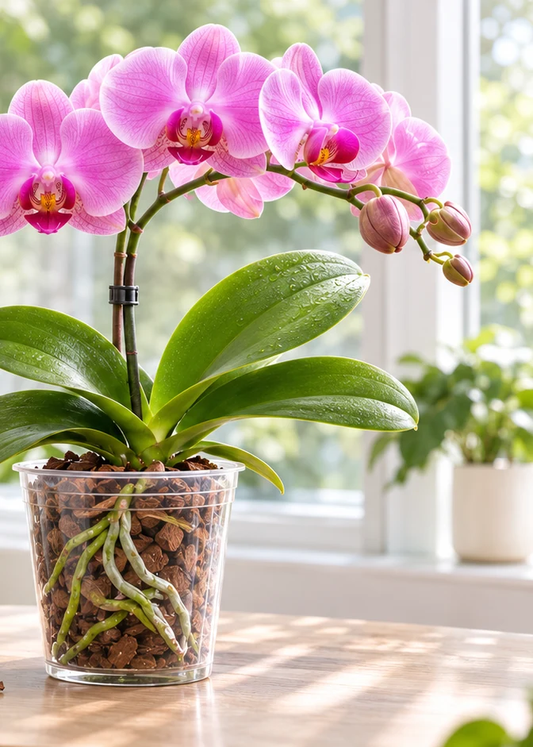
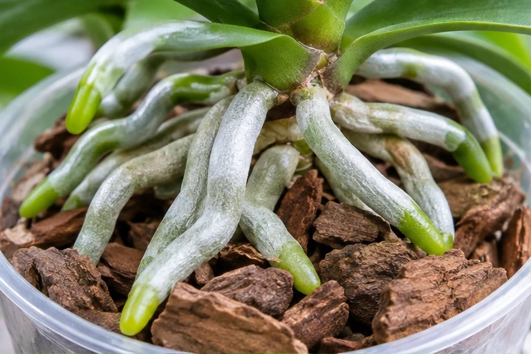
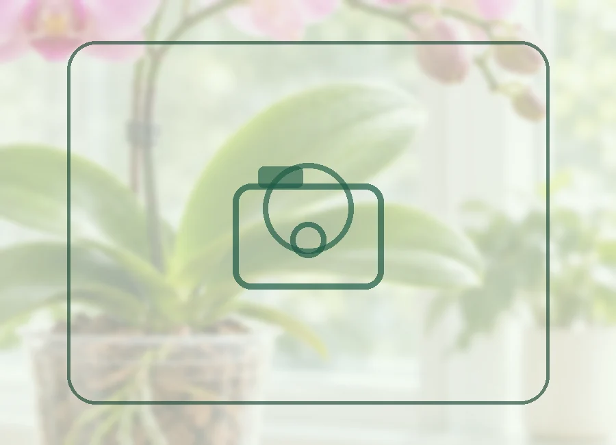

초록의 신호를 읽는 시간
나의 난이
건강하게 자라는 법.
잎의 색, 뿌리의 감촉, 꽃봉오리의 작은 변화까지. 어려운 난 관리를 직관적인 사진과 쉬운 설명으로 배워보세요.

사진으로 비교하는
우리 난의 상태
이상해 보이는 부분을 골라 자세한 징후와 대응 순서를 확인하세요. 사진만으로 병명을 확정할 수는 없습니다.
잎보다 뿌리와 배지를 함께 살피는 것.
해당 검색 결과가 없습니다. 다른 단어로 찾아보세요.
* 비교 사진은 AI가 생성한 실사형 참고 이미지입니다. 실제 난의 질병을 촬영·확진한 사진이 아니며, 일부 질환의 모양은 유사하게 나타날 수 있습니다.
내 난 사진을 옆에 놓고 비교하세요.
기기에 있는 사진을 골라 기준 이미지와 나란히 살펴볼 수 있습니다. 사진은 업로드되지 않고 이 브라우저에서만 표시됩니다.

참고 이미지 · 정상 뿌리
난을 키우는
여섯 가지 기본
물을 얼마나 자주 주느냐보다 더 중요한 것들이 있습니다. 카드마다 핵심과 상세 설명을 담았습니다.
물주기는 달력이 아니라 배지·화분 무게·뿌리 상태가 알려줍니다.
NATURE SPEAKS IN DETAILS.하루하루 도움이 되는
난 관리 실전 가이드
처음 들여온 난부터 분갈이·봉오리·해충까지, 상황에 맞는 상세 관찰법을 열어보세요.
우리 난이 아픈가요?
순서대로 확인하기
자동 확진이 아닌 관찰 안내 도구입니다. 급격히 퍼지는 무름·악취·진물은 다른 난과 격리하고 전문가에게 문의하세요.
어느 부분에 이상이 보이나요?
난이라고
모두 같지는 않아요
호접란 기준을 모든 품종에 적용하지 마세요. 품종을 선택해 빛·물·온도·개화 요구를 비교할 수 있습니다.
한 장으로 익히는
난 관리 도감
포스터를 눌러 크게 읽을 수 있습니다. 질병 포스터도 참고 그림이며, 자세한 대응은 증상 카드와 출처를 확인하세요.
분갈이, 이렇게 해보세요.
부패한 뿌리와 정상적인 뿌리를 구분하는 것이 중요합니다.
나만의 난을 돌보는
작은 식물 일기장
난을 여러 개 등록해 물주기·분갈이·비료·해충 관찰을 날짜별로 기록하세요. 실제로 한 일만 남기며, 자동 물주기 지시를 하지 않습니다.
내 기기 브라우저에 저장 · JSON 백업 지원
오늘의 난 관리 기록
관리 달력
날짜를 누르면 해당 날짜의 기록을 보고, 새 일기를 쓰는 날짜로 선택할 수 있습니다.
관리 일기 타임라인
내 난의 성장 기록 안전하게 보관하기
기록은 서버로 전송하지 않습니다. 브라우저 데이터를 삭제하면 사라질 수 있으므로 JSON 백업을 권장합니다.
근거를 확인할 수 있는
정원 가이드
자료는 미국난협회(AOS), 스미스소니언 가든, 영국왕립원예협회(RHS)의 공개 재배·병해충 정보를 참고해 작성했습니다. 사이트 내 설명은 원문을 그대로 복제하지 않고 한국어로 재구성했습니다.
ⓘ 이 사이트는 교육용이며 AI로 생성한 실사형 참고 이미지가 포함됩니다. 사진·증상 선택만으로 병원균을 식별하거나 치료를 보장할 수 없습니다. 방제제는 국내 사용등록 여부 및 제품 라벨을 확인하세요.